第五章 一元一次方程
第五章 一元一次方程

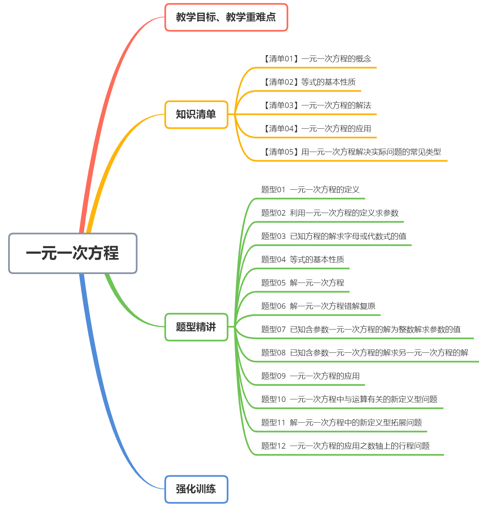

教学目标 | 1. 理解方程、一元一次方程及其解的概念，掌握等式性质与解方程步骤。 2. 能列一元一次方程解决实际问题，会根据解求参数或代数式的值。 3. 应对新定义、含参数等拓展问题，提升方程应用能力。4.。 |
教学重难点 | 1.重点 （1）熟练运用去分母等步骤解一元一次方程，准确掌握等式性质。 （2）找准实际问题中的等量关系，列方程解决常见类型问题。 2.难点 （1）含参数方程中，根据解的条件（如整数解）求参数的所有可能值。 （2）理解新定义型问题的规则，将其转化为常规方程求解并验证。 |

【清单01】一元一次方程的概念
1.方程：含有未知数的等式叫作方程．
2.方程的解：使方程左右两边相等的未知数的值，叫作方程的解。
3.一元一次方程定义：只含有一个未知数，未知数的次数都是一次，且两边都是整式的方程叫作一元一次方程。
细节剖析：判断是否为一元一次方程，应看是否满足：
①只含有一个未知数，未知数的次数为1；②未知数所在的式子是整式，即分母中不含未知数．
4.一元一次方程的解：能使一元一次方程两边相等的未知数的值叫做一元一次方程的解，也叫作方程的根。
【清单02】等式的基本性质
等式的性质1 等式的两边都加上（或都减去）同一个数或式，所得结果仍是等式。
字母表达式为： ．
．
等式的性质2 等式的两边都乘或都除以同一个数或式（除数不能为零），所得结果仍是等式。
字母表达式为：
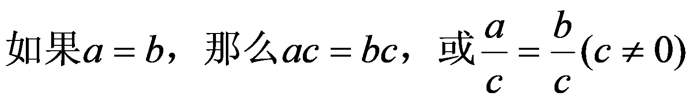
．细节剖析：
等式的传递性
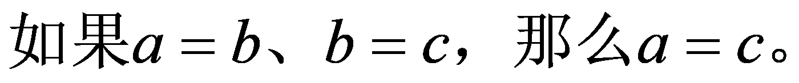
【清单03】一元一次方程的解法
解一元一次方程的一般步骤：
(1)去分母：在方程两边同乘以各分母的最小公倍数．
(2)去括号：依据乘法分配律和去括号法则，先去小括号，再去中括号，最后去大括号．
(3)移项：把含有未知数的项移到方程一边，常数项移到方程另一边．
(4)合并：逆用乘法分配律，分别合并含有未知数的项及常数项，把方程化为ax＝b(a≠0)的形式．
(5)系数化为1：方程两边同除以未知数的系数得到方程的解 (a≠0)．
(a≠0)．
(6)检验：把方程的解代入原方程，若方程左右两边的值相等，则是方程的解；若方程左右两边的值不相等，则不是方程的解．
【清单04】一元一次方程的应用
首先审题找出题中的未知量和所有的已知量，直接设要求的未知量或间接设一关键的未知量为x，然后用含x的式子表示相关的量，找出之间的相等关系列方程、求解、作答，即设、列、解、答．
一元一次方程应用题解题一般步骤：
①审：审题，分析题中已知什么，求什么，明确各数量之间关系
②设：设未知数（一般求什么，就设什么为x）
③找：找出能够表示应用题全部意义的一个相等关系
④列：根据这个相等关系列出需要的代数式，进而列出方程
⑤解：解所列出的方程，求出未知数的值
⑥答：检验所求解是否符合题意，写出答案（包括单位名称）
【清单05】用一元一次方程解决实际问题的常见类型
（1）探索规律型问题；
（2）数字问题；
（3）销售问题（利润＝售价﹣进价，利润率＝ ×100%）；
×100%）；
（4）工程问题（①工作量＝人均效率×人数×时间；②如果一件工作分几个阶段完成，那么各阶段的工作量的和＝工作总量）；
（5）行程问题（路程＝速度×时间）；速度×时间=路程；相遇问题：S甲＋S乙=S总 ；追及问题：S快-S慢=S相距 ；
（6）等值变换问题；
（7）和，差，倍，分问题；
（8）分配问题；
（9）比赛积分问题；
（10）水流航行问题（顺水速度＝静水速度+水流速度；逆水速度＝静水速度﹣水流速度）．

题型01 一元一次方程的定义
【例1】（24-25七年级上·吉林·期中）下列方程中是一元一次方程的是（ ）
A．
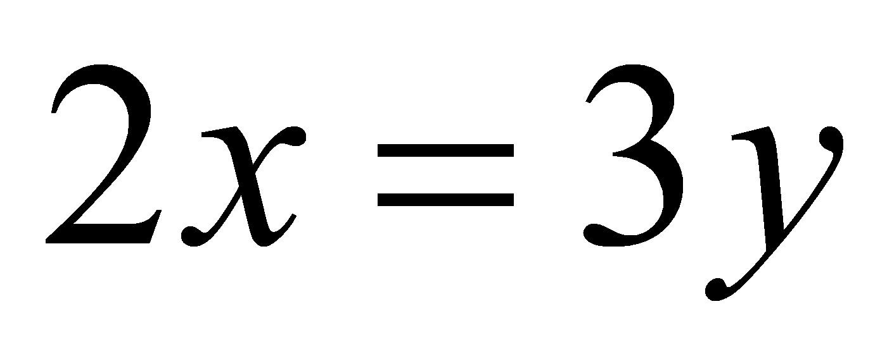
B． C．
C． D．
D．
【变式1-1】（24-25七年级下·四川乐山·期中）以下方程：① ；②
；② ；③
；③ ；④
；④ ；⑤
；⑤
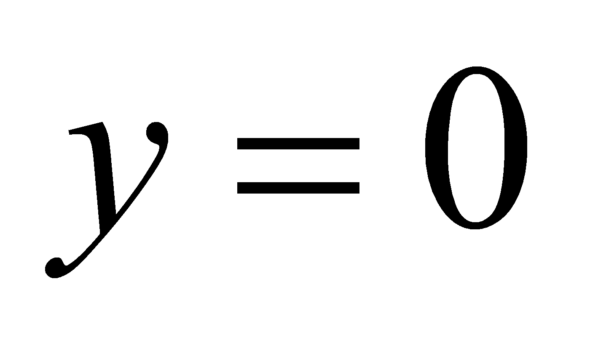
；⑥ ；⑦
；⑦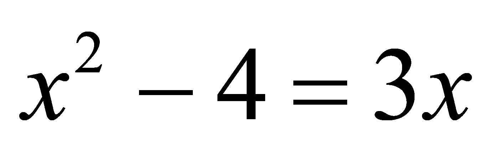
．其中一元一次方程有（ ）A．2个 B．3个 C．4个 D．5个
【变式1-2】（24-25七年级下·甘肃天水·期中）已知下列方程：① ② ③ ④ ⑤ ⑥．其中一元一次方程有( )
⑥．其中一元一次方程有( )
A．1个 B．2个 C．3个 D．5个
题型02 利用一元一次方程的定义求参数
【例2】（24-25七年级上·江苏扬州·期中）已知关于x的方程
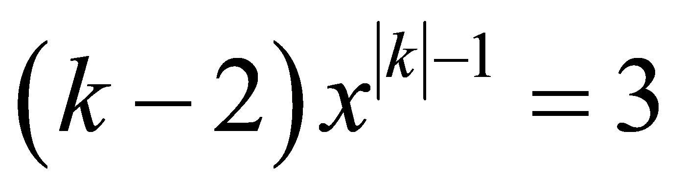
是一元一次方程，则 ．
．【变式2-1】（24-25七年级下·河南周口·期中）已知
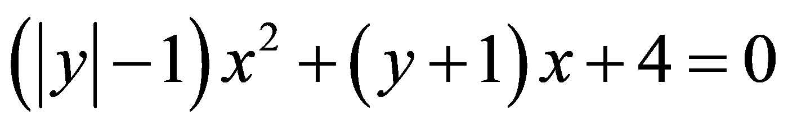
是关于x的一元一次方程，则 ．
．【变式2-2】（24-25六年级下·山东烟台·期中）已知关于 的方程
的方程 是一元一次方程，则
是一元一次方程，则 的值是 ．
的值是 ．
题型03 已知方程的解求字母或代数式的值
【例3】（24-25七年级下·四川内江·期中）如果
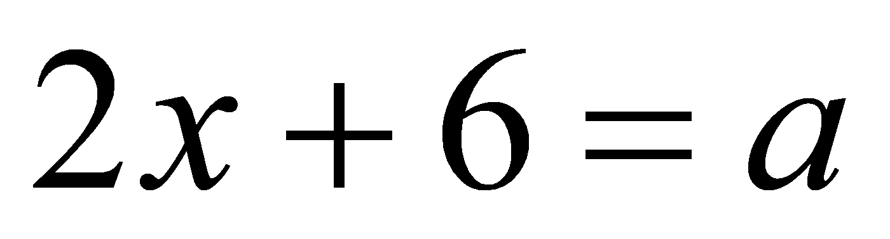
的解与 的解相同，则a的值是 ．
的解相同，则a的值是 ．【变式3-1】（23-24七年级上·四川广元·期中）若方程
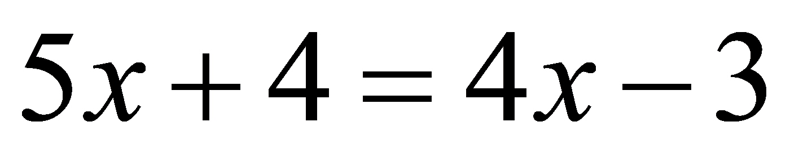
的解比方程 的解大1，则m的值为 ．
的解大1，则m的值为 ．【变式3-2】（24-25七年级下·福建泉州·期中）若 是关于的方程
是关于的方程
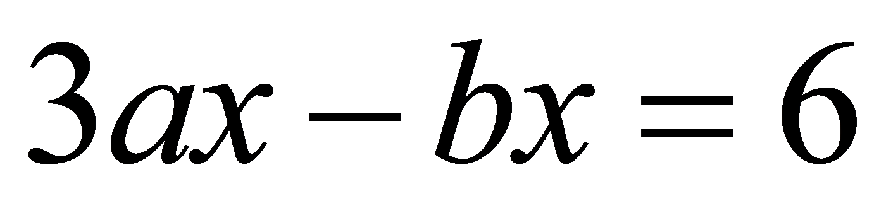
的解，则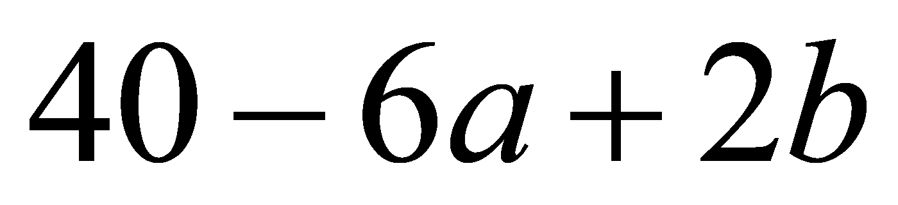
的值是 ．题型04 等式的基本性质
【例4】（24-25七年级上·安徽合肥·期中）下列说法一定正确的是（ ）
A．若 ，则
，则 B．若，则
B．若，则
C．若，则 D．若
D．若 ，则
，则
【变式4-1】（24-25七年级下·四川眉山·期中）下列运用等式的性质变形错误的是（ ）
A．若 ，则
，则 B．若
B．若 ，则
，则
C．若，则 D．若，则
D．若，则
【变式4-2】（24-25七年级下·黑龙江绥化·期中）运用等式的性质进行变形，错误的是（ ）
A．如果，那么 B．如果，那么
C．如果 ，那么 D．如果，那么
，那么 D．如果，那么
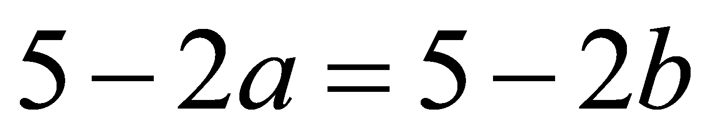
题型05 解一元一次方程
【例5】（24-25七年级上·四川德阳·期中）解下列方程：
(1) ；
；
(2) ．
．
【变式5-1】（24-25七年级上·湖北武汉·期中）解方程：
(1)
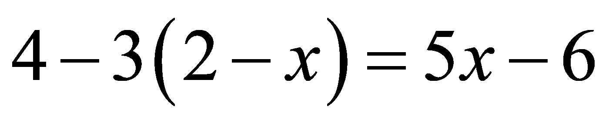
；(2) ．
．
【变式5-2】（24-25七年级上·北京·期中）解方程：
(1)
(2)
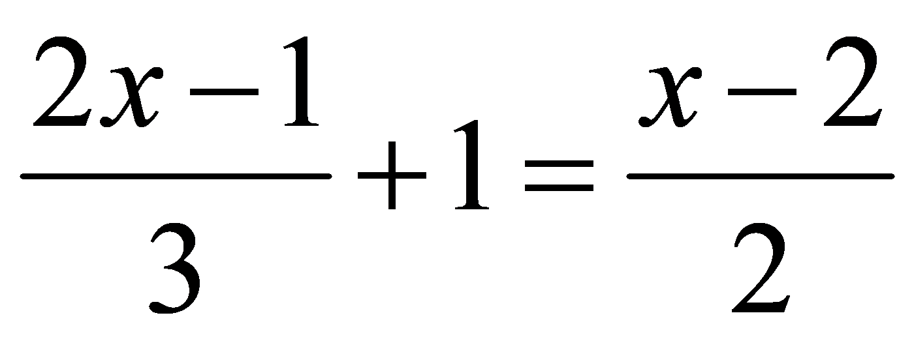
题型06 解一元一次方程错解复原
【例6】（24-25七年级上·吉林松原·期中）以下一名同学解方程 的解答过程．
的解答过程．
解：去分母，得 ①
①
去括号，得 ②
②
移项，合并同类项，得 ③
③
系数化为1，得 ④
④
该同学的解答在第______步出现错误，请写出正确的解答过程．
【变式6-1】（24-25七年级上·福建莆田·期中）下面是小青同学错题本上的一道题，请仔细阅读并完成相应的问题．
解方程： 解： 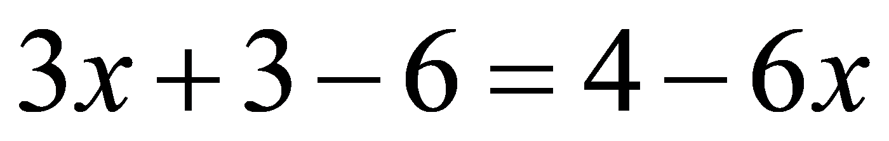 ．第二步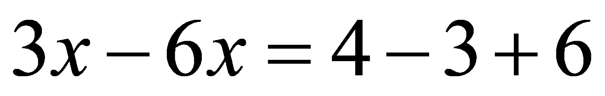 ．第三步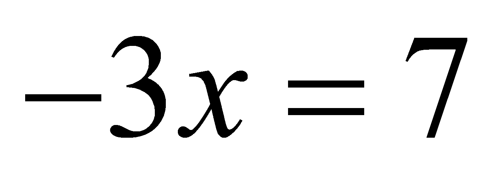 ．第四步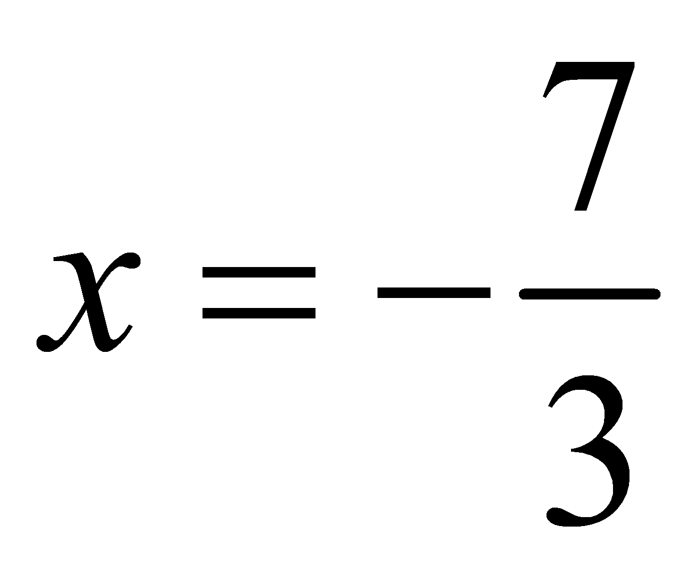 ．第五步 |
 ．
． ．第一步
．第一步(1)填空：①以上解题过程中，第一步是依据______进行变形的，第二步去括号时用到的运算律是______；
②第______步开始出错，这一步错误的原因是______；
(2)请正确解该方程．
【变式6-2】（24-25七年级上·福建福州·期中）在学习《求解一元一次方程》之后，老师在黑板上出了一道解方程的题，下面是小乐同学的解
题过程，请仔细阅读并完成相应的任务．
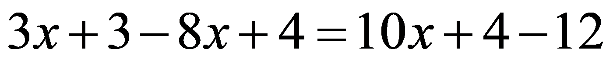 ……………………第二步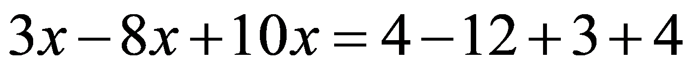 ……………………第三步
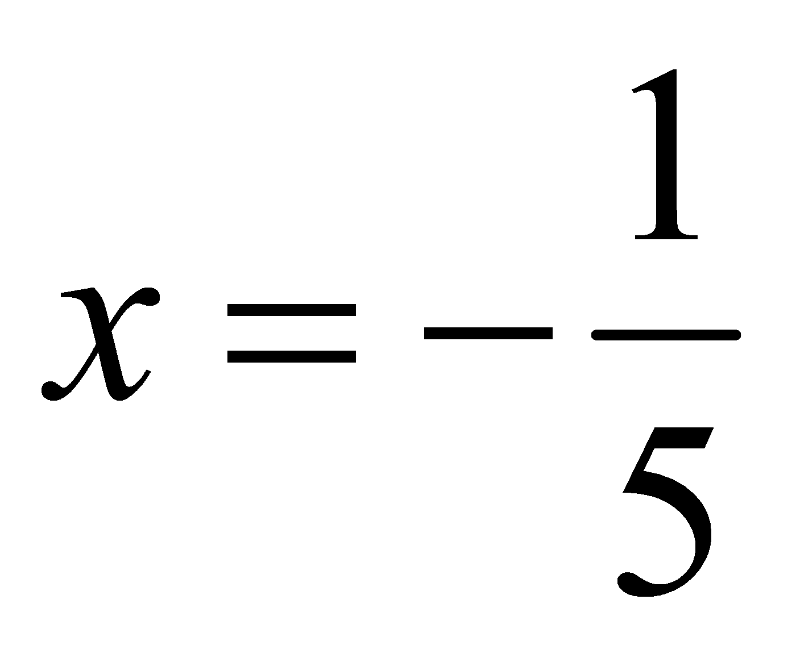 ……………………第五步 |
 解：
解： ……………………第一步
……………………第一步 ……………………第四步
……………………第四步填空：
(1)以上解题过程中，第一步的变形的依据是__________；第二步去括号时依据的运算律是__________；
(2)以上解题过程中从第_________步开始出现错误，这一步错误的原因是__________；
(3)求该方程的正确解．
题型07 已知含参数一元一次方程的解为整数解求参数的值
【例7】（24-25七年级上·江苏南通·期中）关于的方程
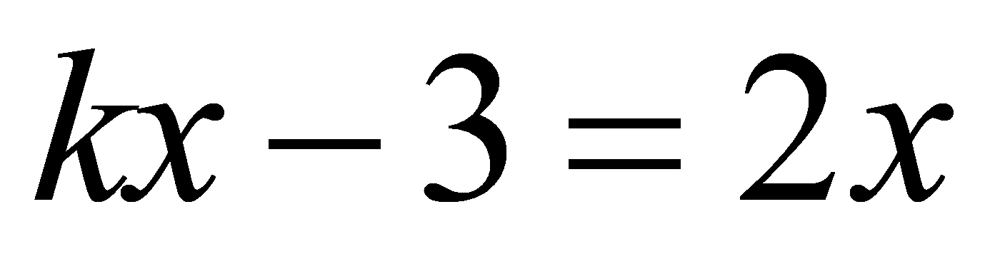
的解是负整数，则整数 的值是 ．
的值是 ．【变式7-1】（24-25七年级下·福建漳州·期中）已知 为整数，若关于的方程
为整数，若关于的方程 的解为正整数，则满足条件的所有的值是 ．
的解为正整数，则满足条件的所有的值是 ．
【变式7-2】（23-24七年级下·四川眉山·期中）关于x的方程
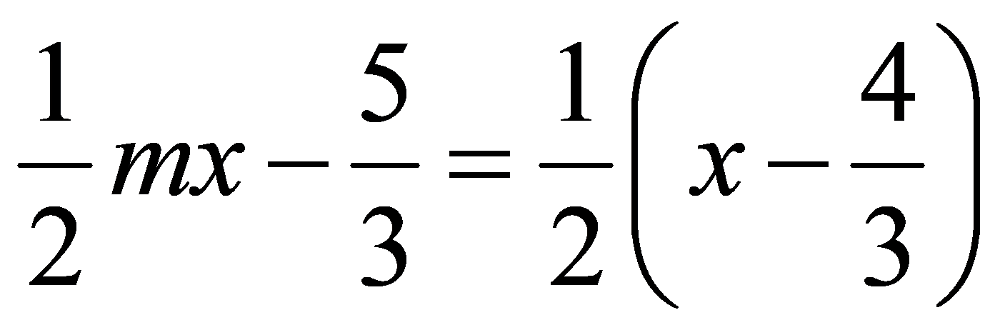
的解是正整数，满足条件的所有整数m的积是 ．题型08 已知含参数一元一次方程的解求另一元一次方程的解
【例8】（24-25七年级下·福建泉州·期中）已知关于x的一元一次方程 的解为
的解为 ，那么关于y的一元一次方程
，那么关于y的一元一次方程
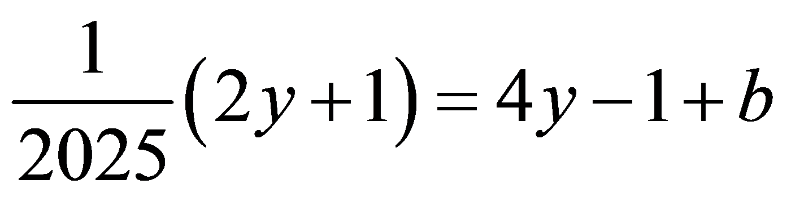
的解为 ．【变式8-1】（24-25七年级上·江苏扬州·期中）已知关于的一元一次方程 的解为
的解为 ，则关于
，则关于 的一元一次方程
的一元一次方程 的解为 ．
的解为 ．
【变式8-2】（23-24七年级上·江苏扬州·期末）关于的一元一次方程 的解为，则关于的一元一次方程
的解为，则关于的一元一次方程 的解 ．
的解 ．
题型09 一元一次方程的应用
【例9】（24-25七年级下·河南周口·期中）洛阳龙门石窟被联合国教科文组织评为“中国石刻艺术的最高峰”．某校七年级组织了一次研学活动，计划安排6名老师带领名学生参观龙门石窟，已知每张门票的票价为90元．现有 ，
， 两种购票方案可供选择：
两种购票方案可供选择：
方案：教师全价，学生半价．
方案：不分教师与学生，师生全部六折优惠．

(1)请分别计算，两种方案的总费用（请用含的代数式表示）．
(2)当学生人数是多少时，，两种方案的总费用一样．
(3)当 时，请通过计算来说明，两种购票方案中哪种更优惠．
时，请通过计算来说明，两种购票方案中哪种更优惠．
【变式9-1】（24-25七年级下·四川眉山·期中）某超市计划购进甲、乙两种商品共120件，这两种商品的进价、售价如表：
进价（元/件） | 售价（元/件） | |
甲 | 25 | 30 |
乙 | 45 | 60 |
(1)超市如何进货，进货款恰好为4600元．
(2)为确保乙型节能灯顺利畅销，在（1）的条件下，商家决定对乙型节能灯进行打折出售，且全部售完后，乙型节能灯的利润率为 ，请问乙型节能灯需打几折？
，请问乙型节能灯需打几折？
【变式9-2】（24-25七年级下·河南洛阳·期中）为节约用水，政府决定对居民用水实行三级阶梯水价：
每户每月用水量 | 水费价格（单位：元/立方米） |
不超过22立方米 | 2.3 |
超过22立方米且不超过30立方米的部分 | a |
超过30立方米的部分 | 4.6 |
(1)若小明家今年2月份用水量是26立方米，缴费62.6元，请求出上表中a值？
(2)在（2）的条件下，若小明家3月份用水量增大，共缴费97.6元，请求出他家3月份的用水量是多少立方米？
题型10 一元一次方程中与运算有关的新定义型问题
【例10】（23-24七年级上·湖南衡阳·期中）若定义一种新的运算“*”，规定有理数 ，如
，如
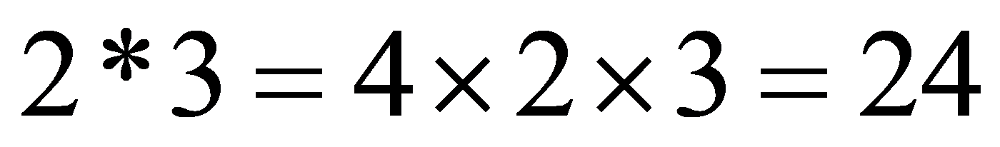
．(1)求 的值；
的值；
(2)若 ，求x的值．
，求x的值．
【变式10-1】（25-26七年级上·全国·期中）定义新运算：对于任意有理数a，b，都有 ，等式右边是通常的加法、减法及乘法运算．比如：
，等式右边是通常的加法、减法及乘法运算．比如： ．
．
(1)求
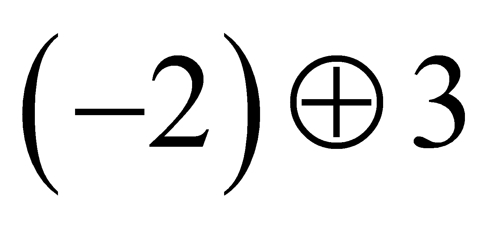
的值；(2)若 的值等于13，求的值．
的值等于13，求的值．
【变式10-2】（24-25七年级上·云南昆明·期中）用“☆”定义一种新运算：对于任意有理数a和b，规定 ．例如：
．例如：
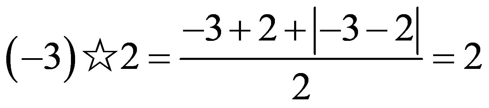
．(1)计算： ；
；
(2)若 ，求的值．
，求的值．
题型11 解一元一次方程中的新定义型拓展问题
【例11】（24-25七年级上·黑龙江哈尔滨·期中）定义：如果两个一元一次方程的解之和为 ，我们就称这两个方程互为“成双方程”．
，我们就称这两个方程互为“成双方程”．
例如：判断方程 和，是否互为“成双方程”．
和，是否互为“成双方程”．
解：方程和是互为“成双方程”，理由如下：
解方程，解得 ．解方程，解得
．解方程，解得 ．
．
 ，
， 方程和互为“成双方程”．
方程和互为“成双方程”．
(1)请判断方程
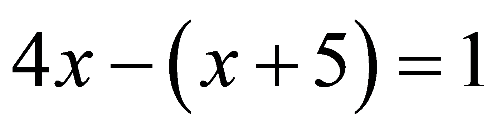
与方程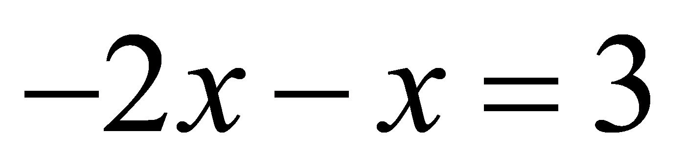
是否互为“成双方程”，并说明理由；(2)若关于的方程 与方程
与方程 互为“成双方程”，求的值．
互为“成双方程”，求的值．
【变式11-1】（23-24七年级上·重庆巴南·期中）定义：如果两个一元一次方程的解之和为1，我们就称这两个方程为“和谐方程”.例如：方程
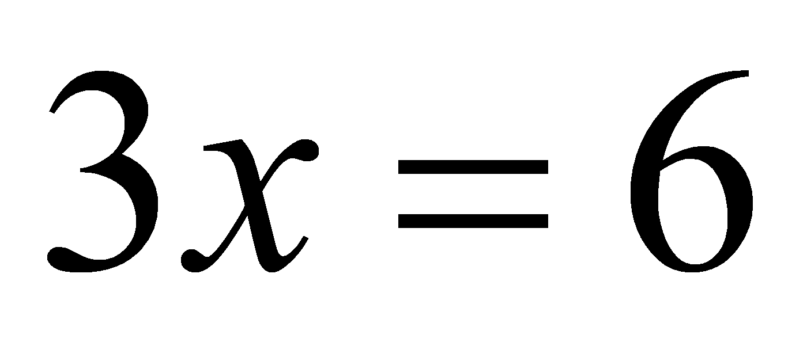
和 为“和谐方程”.
为“和谐方程”.(1)若关于的方程
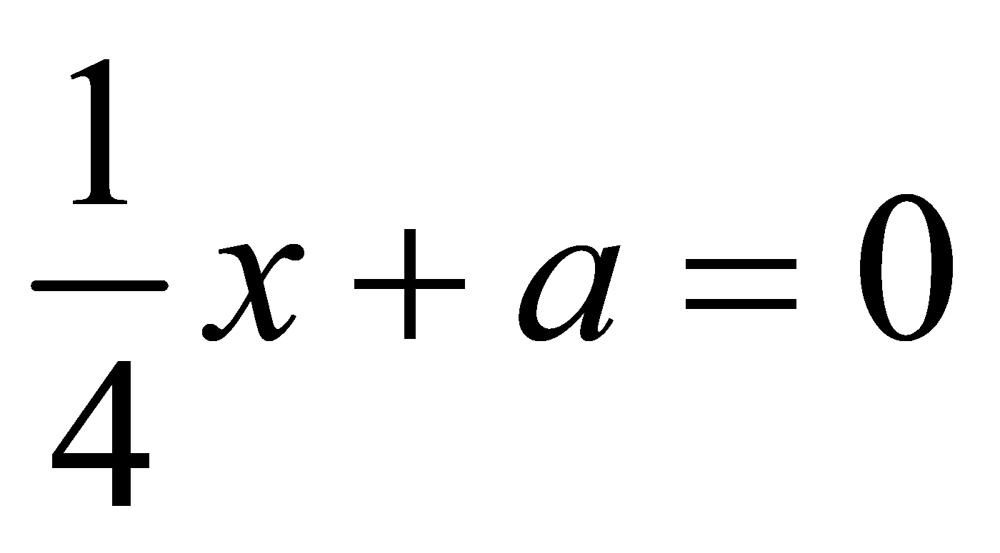
与方程 是“和谐方程”，求的值；
是“和谐方程”，求的值；(2)若“和谐方程”的两个解的差为6，其中一个解为，求的值；
(3)若关于的一元一次方程 和
和 是“和谐方程”，求关于的一元一次方程
是“和谐方程”，求关于的一元一次方程 的解.
的解.
【变式11-2】（24-25七年级上·广东江门·期中）对于， ，定义，若
，定义，若
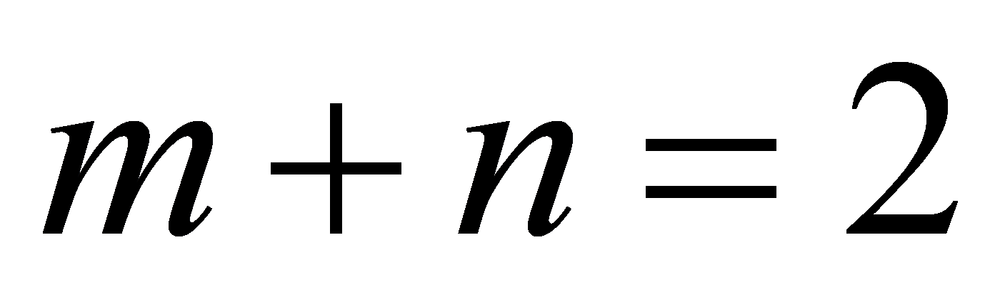
，则称与是关于1的“对称数”．(1)填空：7与_________是关于1的“对称数”， 与_________是关于1的“对称数”．
与_________是关于1的“对称数”．
(2)若 ，
， ，判断与
，判断与 是不是关于1的“对称数”，并说明理由．
是不是关于1的“对称数”，并说明理由．
(3)已知
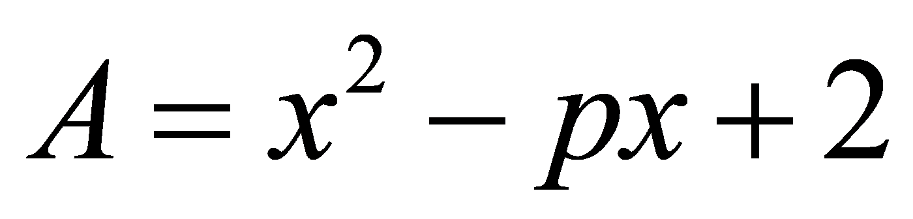
， ，其中
，其中 ，
， 均为常数，且无论取何值，与都是关于1的“对称数”，求，的值．
均为常数，且无论取何值，与都是关于1的“对称数”，求，的值．题型12 一元一次方程的应用之数轴上的行程问题
【例12】（25-26七年级上·湖南衡阳·期中）在数轴上，点 为原点，点表示的数为
为原点，点表示的数为 ，点表示的数为
，点表示的数为 ．动点
．动点 从点出发，以每秒
从点出发，以每秒 个单位长度的速度沿数轴正方向运动，动点
个单位长度的速度沿数轴正方向运动，动点 从点出发，以每秒个单位长度的速度沿数轴负方向运动．设运动时间为
从点出发，以每秒个单位长度的速度沿数轴负方向运动．设运动时间为 秒（
秒（ ）．
）．
(1)分别用含的代数式表示点、点对应的数；
(2)当为何值时，、两点到原点的距离相等？
(3)若点运动到点后立即以原速度沿数轴负方向运动，点运动到点后停止运动．
①求点到达点及点到达点的时间；
②当 时，是否存在某一时刻，使得、两点之间的距离为
时，是否存在某一时刻，使得、两点之间的距离为 个单位长度？若存在，求出的值；若不存在，说明理由．
个单位长度？若存在，求出的值；若不存在，说明理由．
【变式12-1】（24-25七年级上·福建南平·期中）阅读并理解下列材料：
数轴是初中数学学习的一个重要工具，利用数轴可以将数与形完美地结合，研究数轴我们发现了许多重要的规律．数轴上点A、B分别表示数a、b，则A、B两点之间的距离为 ，将数轴沿表示
，将数轴沿表示 的点折叠，可使点A、B重合，例如点M表示的数是2，点N表示的数是6，则M、N两点之间的距离
的点折叠，可使点A、B重合，例如点M表示的数是2，点N表示的数是6，则M、N两点之间的距离 ，将数轴沿表示
，将数轴沿表示
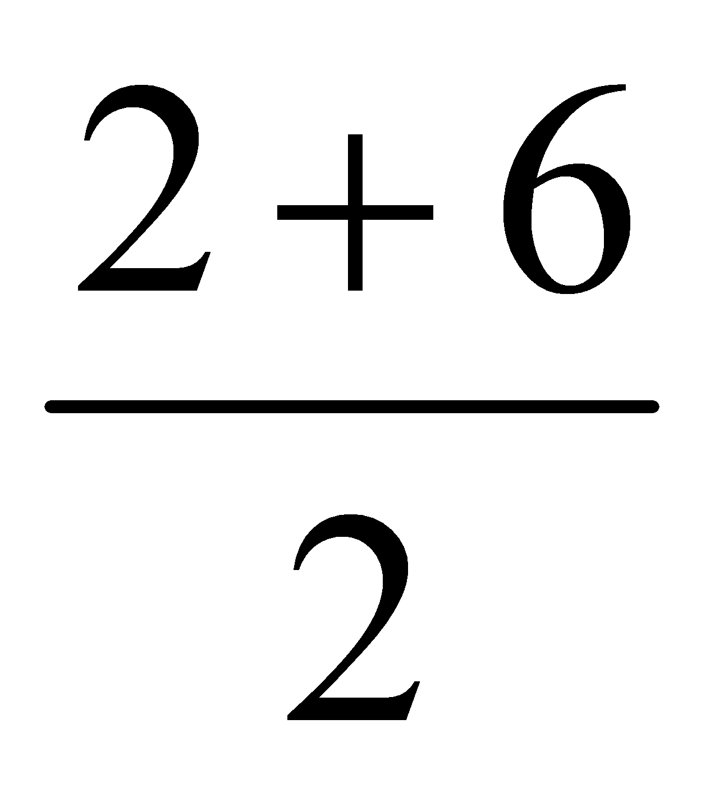
的点折叠，可使点M、N重合．
请你解决以下问题：
数轴上点A、B、C分别表示数a、b、c，其中 ．
．
(1)若a、b满足
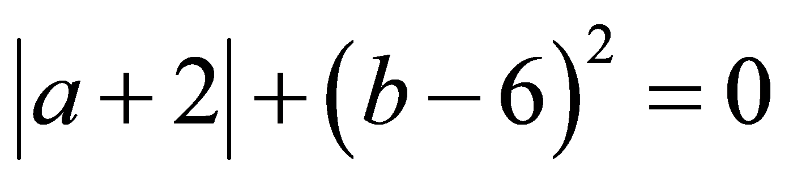
，求A，B两点之间的距离；(2)点A、B、C在数轴上的位置如图所示，沿该数轴上某点折叠，使点A、点B重合，则与点C重合的点表示的数为 （用含a、b、c的代数式表示）；
(3)若 ，
， ，
， ，在数轴上点A以每秒x个单位长度的速度向左匀速运动，同时点B以每秒4个单位长度的速度向右匀速运动，运动t秒后，
，在数轴上点A以每秒x个单位长度的速度向左匀速运动，同时点B以每秒4个单位长度的速度向右匀速运动，运动t秒后， ，
， ，则若运动过程中，
，则若运动过程中， 的值不变，求x的值．
的值不变，求x的值．
【变式12-2】（24-25七年级上·湖南长沙·期末）“幸福是奋斗出来的”，在数轴上，若C到A的距离刚好是3，则C点叫做A的“幸福 点”，若C到 A、B 的距离之和为6，则C叫做A、B的“幸福中心”．
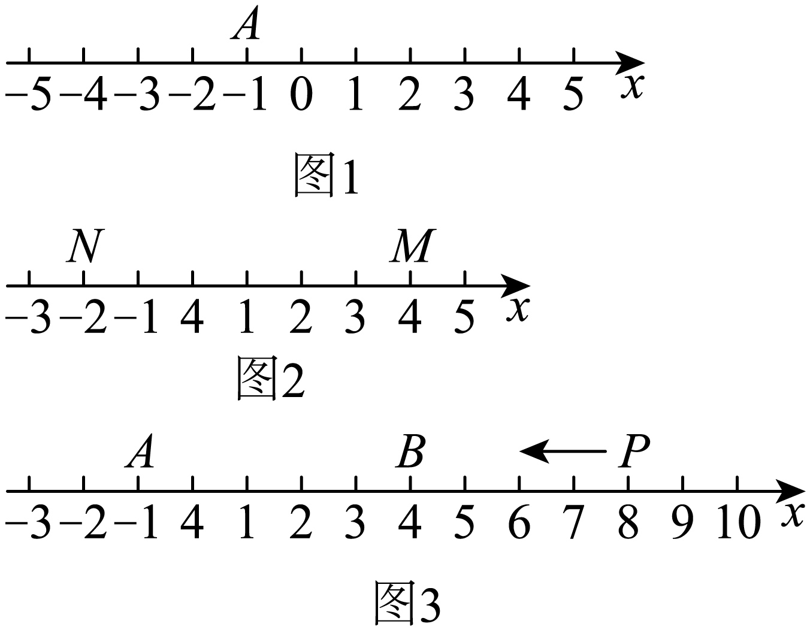
(1)如图1，点A表示的数为 ，则A的幸福点C所表示的数应该是
，则A的幸福点C所表示的数应该是
(2)如图2 ，M、N为数轴上两点，点 M所表示的数为4 ，点N所表示的数为 ，点C就是M、N的幸福中心，则C所表示的数可以是 （填一个即可）；
，点C就是M、N的幸福中心，则C所表示的数可以是 （填一个即可）；
(3)如图 3， A、B、P为数轴上三点，点A所表示的数为，点B所表示的数为4 ，点P所表示的数为8，现有一只电子蚂蚁从点P出发，以2 个单位每秒的速度向左运动，当经过多少秒时，电子蚂蚁是A和B的幸福中心？

一、单选题
1．（24-25七年级上·甘肃武威·期末）下列四个方程属于一元一次方程的是（ ）
A．
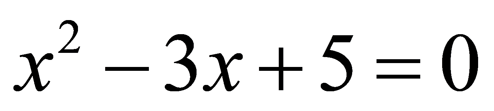
B．
C．
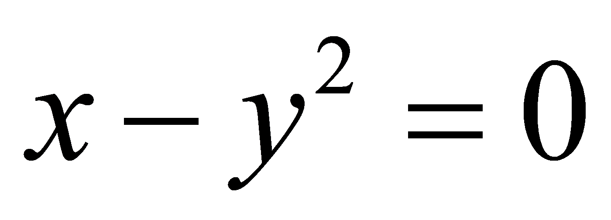
D．
2．（25-26七年级上·全国·期末）下列式子是运用等式的性质进行的变形，其中错误的是（ ）
A．若 ，则
，则
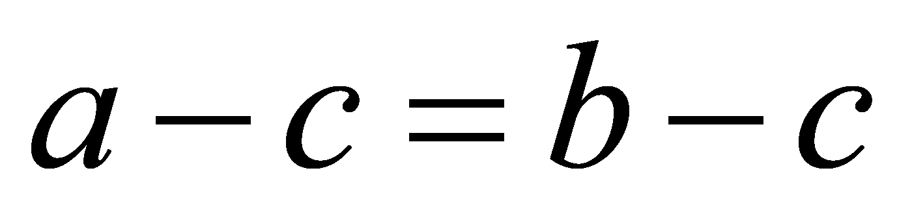
B．若，则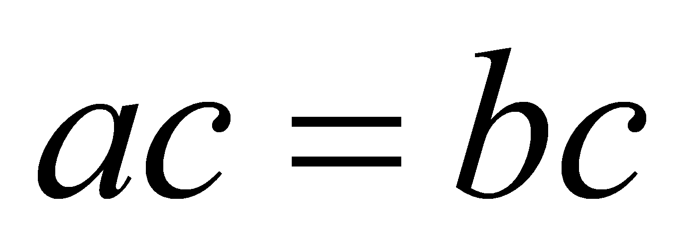
C．若，则 D．若，则
D．若，则
3．（25-26七年级上·河北唐山·期中）当 时，嘉淇计算多项式
时，嘉淇计算多项式 的值为4，当
的值为4，当 时，的值为7，则k的值为（ ）
时，的值为7，则k的值为（ ）
A．1 B．2 C．3 D．4
4．（24-25七年级下·重庆万州·月考）若不论k取什么数，关于x的方程 （m、n是常数）的解总是．则
（m、n是常数）的解总是．则 的值是（ ）
的值是（ ）
A． B．
B． C．
C． D．15
D．15
5．（25-26七年级上·陕西西安·月考）如图，将2， ，4，
，4， ，7，
，7， ，
， ，3分别填入圆圈内，使横、竖以及内、外两圈上的4个数字之和都相等，现已将2，，4，，7这五个数填入圆圈内，则图中
，3分别填入圆圈内，使横、竖以及内、外两圈上的4个数字之和都相等，现已将2，，4，，7这五个数填入圆圈内，则图中 （ ）
（ ）

A． 或2 B．或2 C．
或2 B．或2 C． 或1 D．或
或1 D．或
6．（25-26七年级上·湖北武汉·开学考试）如图是某月的月历，现用“
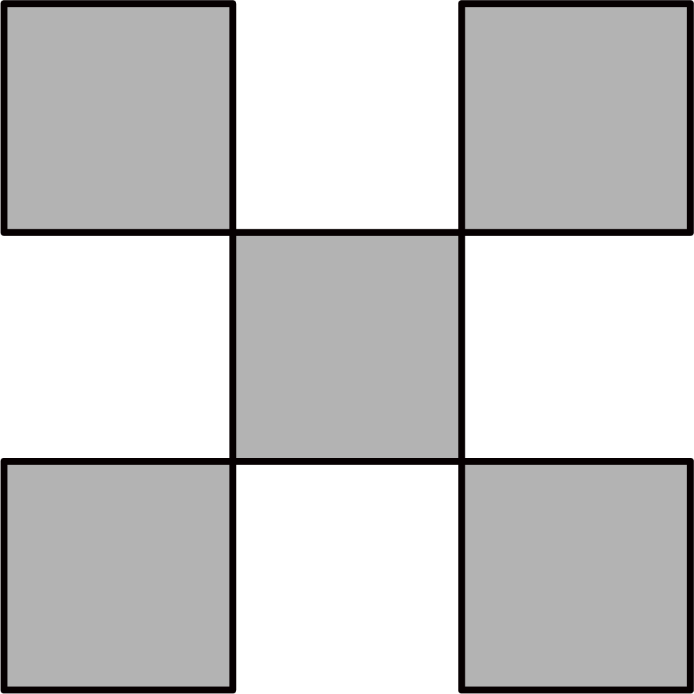
”图形在月历中框出5个数，它们的和为55．不改变“”图形的大小，将“”图形在该月历上移动，所得5个数的和可能是（ ）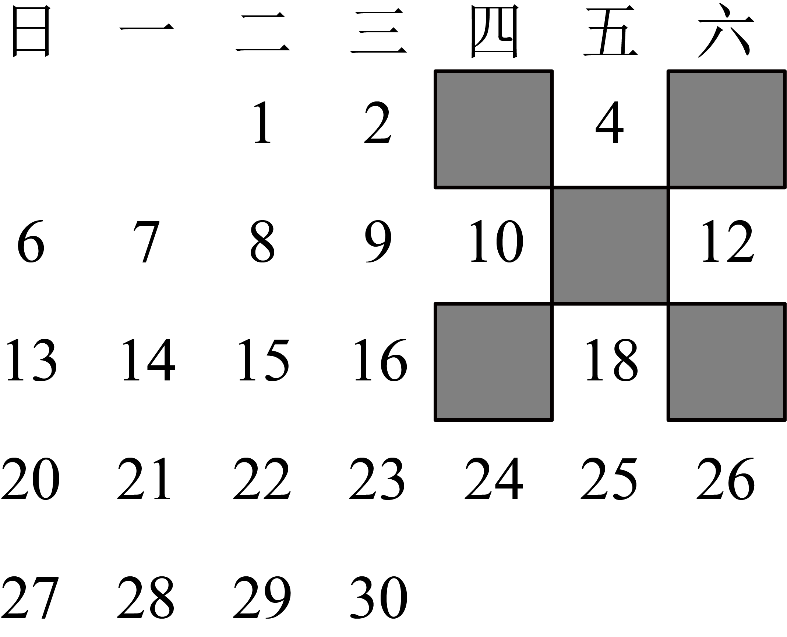
A．40 B．88 C．107 D．110
二、填空题
7．（25-26七年级上·重庆·期中）若 是关于
是关于 的方程
的方程
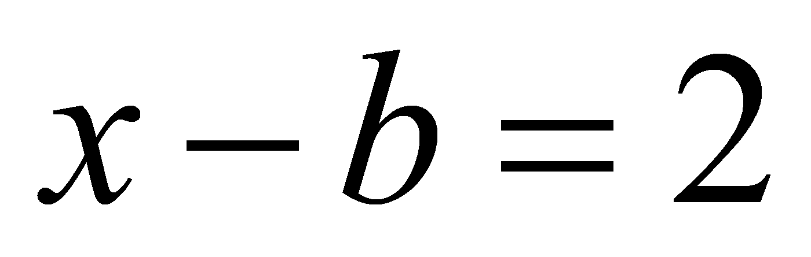
的解，则 的值为 ．
的值为 ．8．（24-25七年级上·四川成都·阶段练习）已知关于x的方程 与方程
与方程
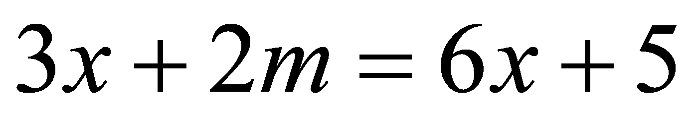
的解相同，则m的值 ．9．（2024七年级上·全国·专题练习）方程
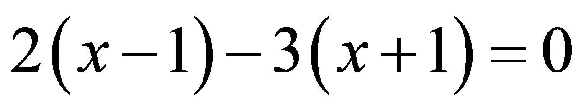
的解与关于x的方程 的解互为相反数，则k的值为 ．
的解互为相反数，则k的值为 ．10．（24-25七年级上·湖北武汉·阶段练习）已知a、b为常数，关于x的方程
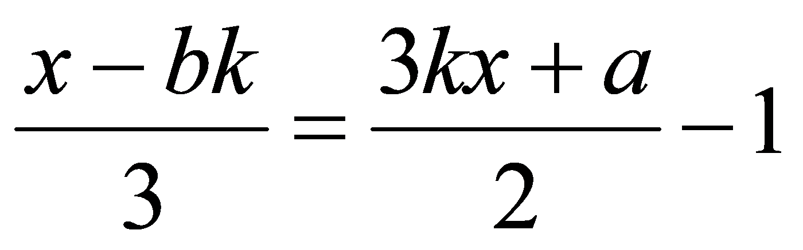
，无论k为何值，它的解总是 ，则ab的值为 ．
，则ab的值为 ．11．（24-25七年级上·辽宁鞍山·阶段练习）已知关于x的一元一次方程
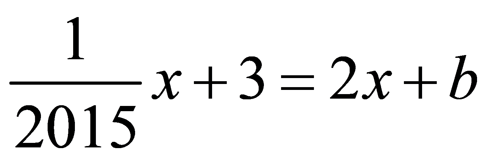
的解为2023，那么关于y的一元一次方程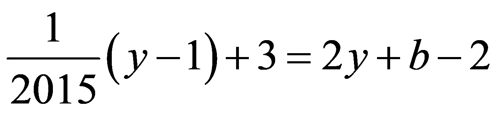
的解为 ．12．（24-25七年级上·江苏南通·阶段练习）若关于的方程
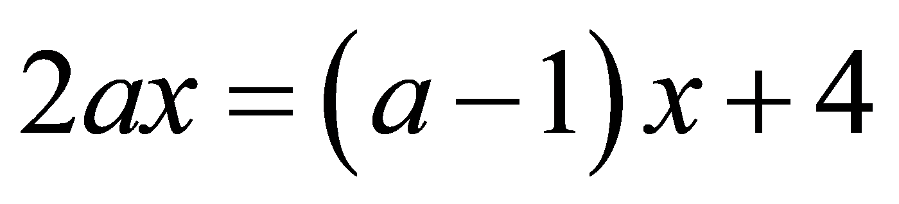
的解是正整数，则整数 的值为 ．
的值为 ．三、解答题
13．（25-26七年级上·重庆·期中）解方程
(1)
(2)
(3)
(4)
14．（25-26七年级上·黑龙江佳木斯·期中） 某校七年级组织研学活动，若租用45座客车，则有15人无座；若租用60座客车，则可少租1辆，且刚好坐满．
(1)求参加研学的学生人数；
(2)已知45座客车租金为每辆300元，60座客车为每辆400元，问租哪种车更合算？
15．（24-25七年级上·江西赣州·期末）如图的数阵是由全体奇数排成的：
(1)如图，任意图出一竖列上相邻的三个数，设中间的一个为，则用含的代数式表示，则另两个数分别是___________和___________；
(2)在数阵图中作图中的平行四边形框，这九个数之和是___________；
(3)这九个数之和能等于2024吗？若能，请写出这九个数中最大的一个数；若不能，请说明理由．
16．（25-26七年级上·广西南宁·阶段练习）已知：在一条东西向的双轨铁路上迎面驶来一快一慢两列火车，快车长 （单位长度），慢车长
（单位长度），慢车长 （单位长度），设正在行驶途中的某一时刻，如图，以两车之间的某点O为原点，取向右方向为正方向画数轴，此时快车头
（单位长度），设正在行驶途中的某一时刻，如图，以两车之间的某点O为原点，取向右方向为正方向画数轴，此时快车头 在数轴上表示的数是，慢车头
在数轴上表示的数是，慢车头 在数轴上表示的数是
在数轴上表示的数是 ．若快车
．若快车 以6个单位长度/秒的速度向右匀速继续行驶，同时慢车
以6个单位长度/秒的速度向右匀速继续行驶，同时慢车 以2个单位长度/秒的速度向左匀速继续行驶，且与
以2个单位长度/秒的速度向左匀速继续行驶，且与 互为相反数，且设运动的时间为
互为相反数，且设运动的时间为 ．
．
(1) ______，______；
______，______；
(2)从此时刻开始算起，问再行驶多少秒钟两列火车行驶到车头 相距8个单位长度？
相距8个单位长度？
(3)从此时刻开始算起，问再行驶多少秒钟有？
17．（19-20七年级上·湖北孝感·期末）中百仓储超市开展迎新春大酬宾促销活动，所有商品一律按顾客购买的商品总价打折出售，折扣方案如下表：
商品总价 | 低于200元 | 不低于200元但低于500元 | 不低于500元 |
折扣方案 | 按总价的九折付款 | 按总价的八折付款 | 按总价的七折付款 |
活动期间，小张阿姨分两次购买了一些商品，总价一共为600元，其中，第一次只购买了一百多元的商品，已知小张阿姨这两次购物一共付款498元．
(1)如果小张阿姨把这两次购物合并为一次购物，在实际支付498元的基础上，还可以节省多少元？
(2)小张阿姨这两次购买的商品的总价分别为多少元？
(3)小张阿姨第三次购物，购买的商品总价为460元，付款时收银员姐姐建议她再挑选40元的商品，凑足500元后付款更划算，请你帮助小张阿姨决定，是否应该接受收银员姐姐的建议？
18．（25-26七年级上·黑龙江佳木斯·期中）阅读材料：
我们定义：若两个实数满足的差等于这两个实数的商，那么这两个实数就叫做“差商等数对”即如果  ，则称a与b就叫做“差商等数对”，记为
，则称a与b就叫做“差商等数对”，记为 ．例如：；
．例如：； ，则称数对，
，则称数对， 是“差商等数对”．根据上述材料，解决下列问题：
是“差商等数对”．根据上述材料，解决下列问题：
(1)下列数对中，“差商等数对”的是 （填序号）：
① ② ③
② ③
(2)若 是“差商等数对”，求 的值；
是“差商等数对”，求 的值；
(3)如果 是“差商等数对”，那么
是“差商等数对”，那么 （用含n的代数式表示）．
（用含n的代数式表示）．
19．（20-21六年级下·黑龙江哈尔滨·期中）某物流公司一天邮寄20个包裹，若每个包裹收费以30元为标准，超出标准价格记为正数，不足标准价格记为负数，这一天的收费记录如下表：
与标准收费的差值 （单位：元） | －4 | －2 | 0 | 2 | 4 | 8 |
包裹个数 | 5 | 2 | 3 | 2 | 6 | 2 |
(1)该物流公司邮寄这20个包裹共收费多少元钱？
(2)该物流公司邮寄包裹按如下标准收取顾客费用（不足1千克按1千克收费）：不超过1千克收10元，超过1千克但不超过10千克，超过的部分按元／千克收费，超过10千克的部分按 元／千克收费，若甲顾客邮寄的包裹重量为20千克，请用含的式子表示甲顾客邮寄包裹所需费用是多少元？
元／千克收费，若甲顾客邮寄的包裹重量为20千克，请用含的式子表示甲顾客邮寄包裹所需费用是多少元？
(3)在（2）的条件下，当包裹重量为14千克时，该物流公司收费40元；若乙顾客某次邮寄包裹的费用为88元，请计算乙顾客此次邮寄包裹重量是多少千克？（乙顾客邮寄包裹重量为整数千克）
20．（25-26七年级上·北京昌平·期中）对于数轴上三个不同的点， ，，给出如下定义：在线段，
，，给出如下定义：在线段， ，
， 中，若其中有两条线段相等，则称
中，若其中有两条线段相等，则称 三点是“均衡点”．
三点是“均衡点”．
(1)点表示的数是 ，点表示的数是1，点表示的数是3，
，点表示的数是1，点表示的数是3，
 三点___________（填“是”或“不是”）“均衡点”；
三点___________（填“是”或“不是”）“均衡点”；
②点 表示的数是
表示的数是 ，且，，三点是“均衡点”，则___________；
，且，，三点是“均衡点”，则___________；
(2)点 表示的数是，点
表示的数是，点 表示的数是
表示的数是 ，线段（为正整数），线段，若，三点是“均衡点”，且关于的一元一次方程
，线段（为正整数），线段，若，三点是“均衡点”，且关于的一元一次方程 的解为整数，求的最小值．
的解为整数，求的最小值．